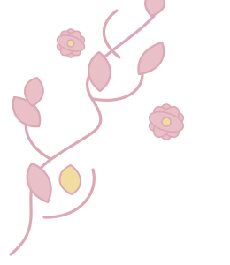

Qur'ani & Berkarakter
Pembiasaan ibadah, tahsin, tahfiz, dan adab dalam keseharian.
↗Mendampingi setiap langkah anak untuk mengenal potensi, mencintai ilmu, dan menebar kebaikan.



 ruang untuk
ruang untukSMPIT Nurhidayah berkomitmen menghadirkan pengalaman belajar yang bermakna. Kami memadukan ilmu pengetahuan, pembiasaan ibadah, karakter mulia, dan ruang eksplorasi agar setiap siswa tumbuh menjadi pribadi yang utuh.
Program yang merawat rasa ingin tahu, iman, dan keberanian untuk berkarya.
Pembiasaan ibadah, tahsin, tahfiz, dan adab dalam keseharian.
↗Belajar melalui diskusi, proyek, eksperimen, dan pemecahan masalah.
↗Ruang aman untuk berkarya, berkolaborasi, dan berani memimpin.
↗*Angka di atas adalah contoh tampilan dan perlu disesuaikan dengan data resmi sekolah.
Kami ingin anak belajar dengan bahagia, mengenal tanggung jawab, dan tetap dekat dengan nilai-nilai kebaikan. Semoga sekolah menjadi rumah kedua yang menguatkan langkahnya.
 AKADEMIK
AKADEMIKRuang kelas menjadi tempat siswa bertanya, mencoba, dan saling menguatkan.
Baca cerita → KARAKTER
KARAKTERMembiasakan kepedulian melalui kegiatan sederhana yang bermakna.
Baca cerita → KEGIATAN
KEGIATANPerayaan proses belajar, kreativitas, dan keberanian untuk mencoba.
Baca cerita →Kenali lingkungan belajar yang mendukung perjalanan mereka.
Mulai percakapan ↗Merawat ilmu, menumbuhkan akhlak, menyiapkan masa depan.

SMPIT Nurhidayah hadir dari semangat untuk menghadirkan pendidikan yang menyelaraskan kecakapan akademik, nilai keislaman, dan pembentukan karakter. Dengan kolaborasi guru, orang tua, dan lingkungan, sekolah terus berupaya menjadi ruang belajar yang aman, hangat, dan bermakna.
Catatan: Narasi ini merupakan teks pengantar contoh. Lengkapi dengan tahun berdiri, tonggak sejarah, dan data resmi sekolah sebelum dipublikasikan.
Menjadi lembaga pendidikan Islam yang membentuk generasi berakhlak mulia, berwawasan luas, mandiri, dan mampu memberi manfaat bagi masyarakat.
❀Mengintegrasikan nilai-nilai Islam dalam pembelajaran dan budaya sekolah.
Mengembangkan pembelajaran aktif, kreatif, kritis, dan menyenangkan.
Membina kemandirian, kedisiplinan, kepedulian, dan tanggung jawab.
Membangun kemitraan yang positif antara sekolah, keluarga, dan masyarakat.

Selamat datang di SMPIT Nurhidayah. Kami percaya setiap anak memiliki keunikan dan potensi yang perlu dirawat dengan keteladanan, kasih sayang, serta proses belajar yang bermakna. Mari berjalan bersama untuk membentuk generasi yang mencintai ilmu dan berakhlak mulia.
Kepala Sekolah SMPIT NurhidayahNama dan sambutan resmi dapat diperbarui di sini.Lingkungan yang mendukung rasa ingin tahu, kenyamanan, dan kolaborasi.
Suasana belajar yang mendukung fokus dan diskusi.

Ruang membaca dan menemukan ide baru.

Mengembangkan kerja sama dan komunikasi.

Bergerak aktif, sehat, dan sportif.

Mengeksplorasi minat, bakat, dan keterampilan.
Foto bersifat ilustratif. Ganti dengan dokumentasi fasilitas asli sekolah.
Rangkaian pengalaman yang menumbuhkan iman, karakter, kreativitas, dan kebersamaan.

Membiasakan tilawah, tahsin, tahfiz, dan adab dalam keseharian.

Melatih komunikasi, pembagian peran, dan pemecahan masalah.

Menghidupkan empati melalui aksi kebaikan dan pelayanan.

Menjelajahi seni, keterampilan, dan cara mengekspresikan gagasan.
Kami merayakan proses, keberanian mencoba, dan pencapaian setiap siswa.
Prestasi bukan hanya tentang podium, tetapi juga tentang konsistensi, kerja sama, dan keberanian untuk belajar dari pengalaman.

Contoh konten — ganti dengan nama lomba dan pencapaian resmi.
Contoh konten — tambahkan kategori, tingkat lomba, dan hasil.
Contoh konten — lengkapi dengan dokumentasi dan nama peserta.
Daftar prestasi di atas adalah contoh tata letak, bukan klaim prestasi nyata.
Momen sederhana yang menjadi bagian dari perjalanan tumbuh bersama.
Foto ilustrasi dari Unsplash. Ganti dengan foto kegiatan sekolah yang memiliki izin publikasi.
Silakan hubungi sekolah untuk informasi lebih lanjut atau kunjungan.
Alamat lengkap sekolah, kelurahan, kecamatan, kota, kode pos.
Tambahkan nomor resmi yang dapat dihubungi.
Ganti dengan email resmi sekolah.
07.00 – 15.00 WIB · sesuaikan dengan jam resmi.
Lokasi peta menggunakan pencarian umum. Pastikan alamat sekolah benar sebelum website dipublikasikan.

Ruang kelas menjadi tempat siswa bertanya, mencoba, dan saling menguatkan.
Belajar adalah perjalanan yang lebih kaya ketika dilakukan bersama. Dalam kegiatan kolaboratif, siswa berlatih menyampaikan gagasan, mendengarkan pendapat teman, serta mencari solusi melalui proses yang terarah.
Guru mendampingi proses tersebut dengan memberi ruang untuk bertanya, bereksperimen, dan merefleksikan hasil. Setiap langkah menjadi kesempatan untuk tumbuh, baik dalam pengetahuan maupun karakter.
“Setiap pertanyaan adalah awal dari penemuan baru.”
Artikel ini merupakan contoh konten awal. Sesuaikan dengan berita, tanggal, dokumentasi, dan informasi yang sudah diverifikasi oleh sekolah.
Mengubah ide menjadi pengalaman digital yang hangat dan mudah digunakan.
 made with
made withSaya merancang website profil SMPIT Nurhidayah dengan pendekatan visual scrapbook modern: hangat, ekspresif, dan tetap mudah dinavigasi. Website dibangun menggunakan HTML, CSS, dan JavaScript native tanpa framework.
Ganti foto, nama, email, dan tautan dengan informasi pengembang yang sebenarnya.
Kembali ke sekolah ↗